Una década de carrera frente al mar.
La edición 2027 se corre el 21 de febrero en Cartagena y marca los diez años de la Media Maratón del Mar Sistecrédito.
Media Maratón del Mar Sistecrédito
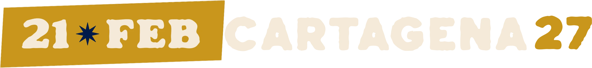
Identidad de campaña para la edición de los diez años: la calle cartagenera, sus personajes y su forma de hablar convertidos en un sistema gráfico para correr.
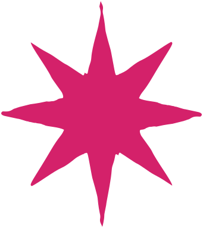
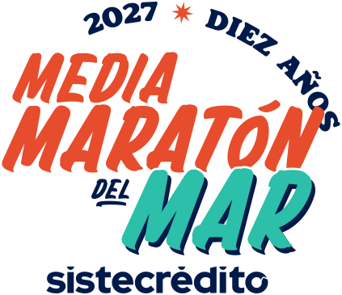
Salida: Sociedad PortuariaLlegada: Centro de ConvencionesCupo: 10.000 corredores
01
Historia de campaña
La campaña 2027 celebra la primera década de la carrera con un lenguaje que nace en la calle y se entiende en cualquier idioma.
La edición 2027 se corre el 21 de febrero en Cartagena y marca los diez años de la Media Maratón del Mar Sistecrédito.
Celebrar la primera década, conectar con una comunidad cada vez más internacional y mantener el sabor auténtico de Cartagena.
Ilustraciones de inspiración cultural, la estrella de las calles y frases en tono local, amigable y deportivo.
La textura gráfica se aplica de forma obligatoria sobre fotografías, ilustraciones y formas para mantener una estética uniforme.
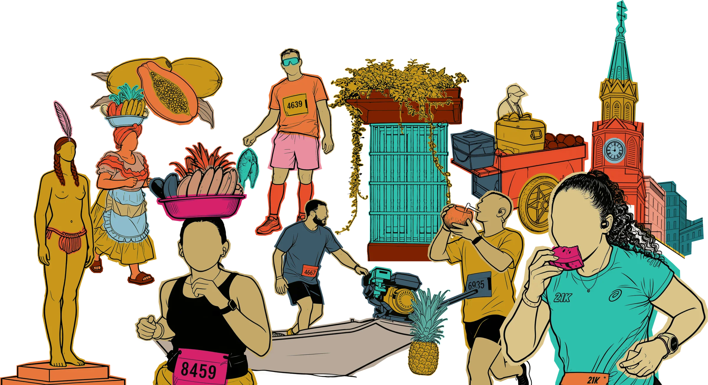
02
Sistema visual
Logotipo, paleta, tipografía, elementos de apoyo y reglas documentados en el manual de Key Visual 2027.
Logotipo
La versión principal domina las aplicaciones. La variación con arco superior integra el año y los diez años como un punto de expresión que se usa de forma ocasional.
Las ocho combinaciones de color que deben predominar en la identidad.
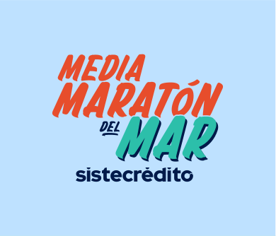
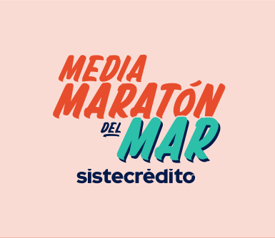
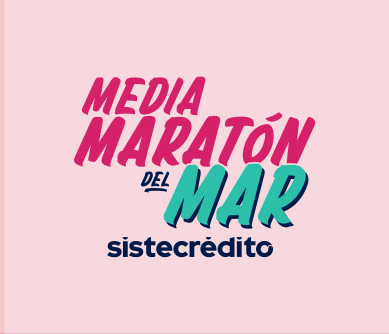
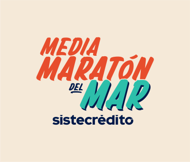
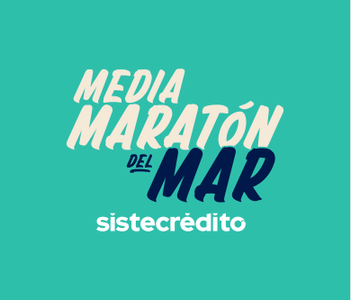
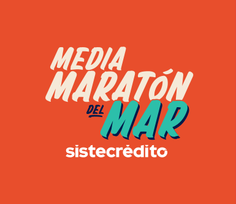
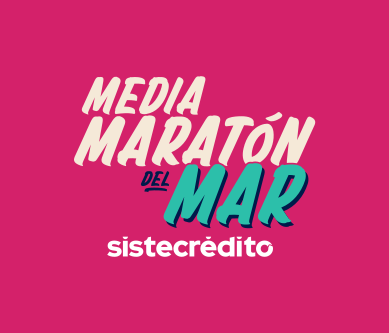
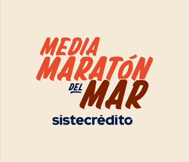
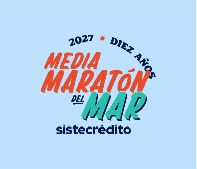
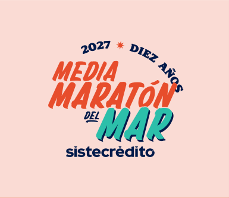
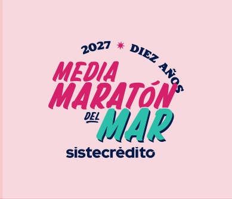
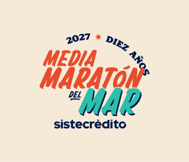
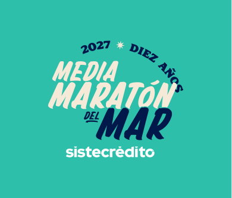
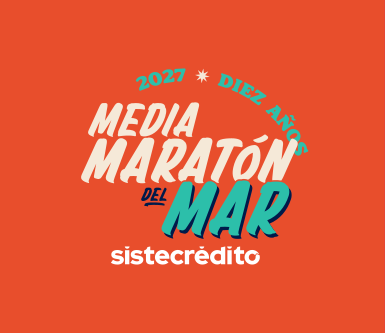
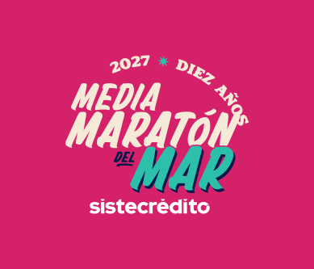
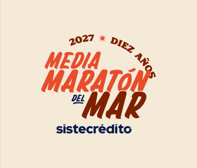
Paleta de color
Selecciona un color para ver sus valores oficiales.
Tipografía
Summer Surfing Serif Rough
¡El que afloja, pierde!
ABCDEFGHIJKLMNÑOPQRSTUVWXYZ · 0123456789 · 21K 10K
Golos Text · textos largos
Cartagena se corre con calma, pero sin relajo.
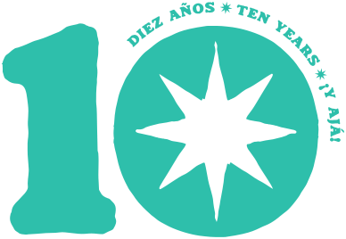
Sello · Diez años
Se entiende en cualquier idioma, pero siempre suena como Cartagena.

La estrella
Uno de los elementos más representativos de Cartagena, adaptado al uso casual de sus calles.
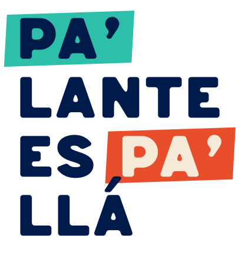
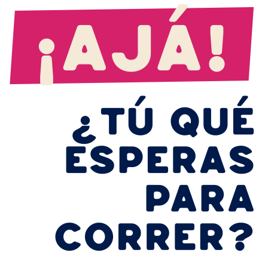
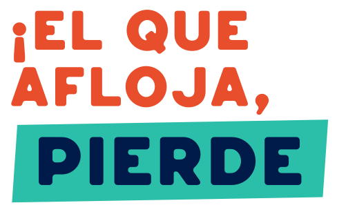
Frases gráficas
Frases en tono amigable, local y deportivo, con resaltado en las palabras clave.
Ilustraciones culturales
Cartagena contada por su gente, sus frutas y su arquitectura. Cada ilustración puede rotarse o cambiar de tonalidad según la pieza, sin deformarse.
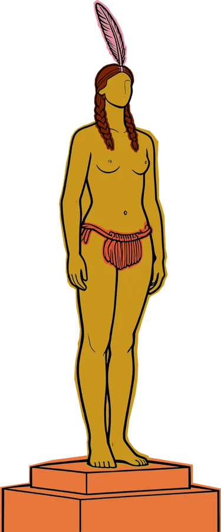
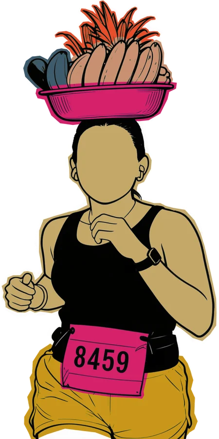
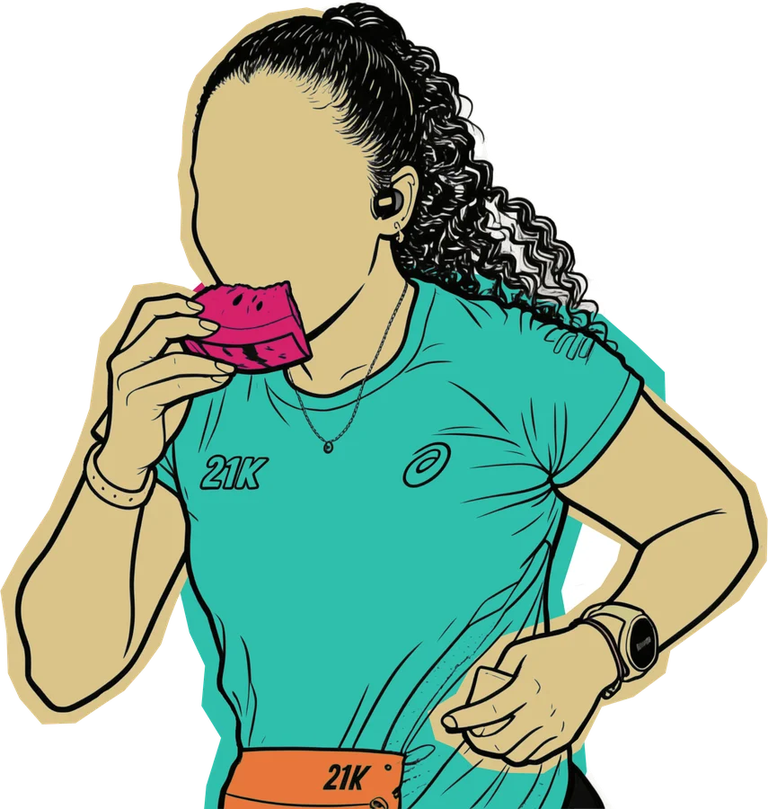
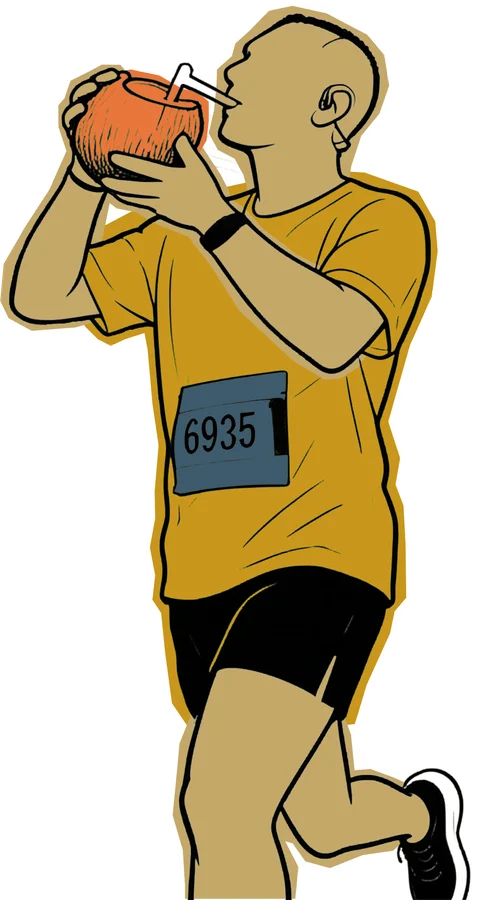
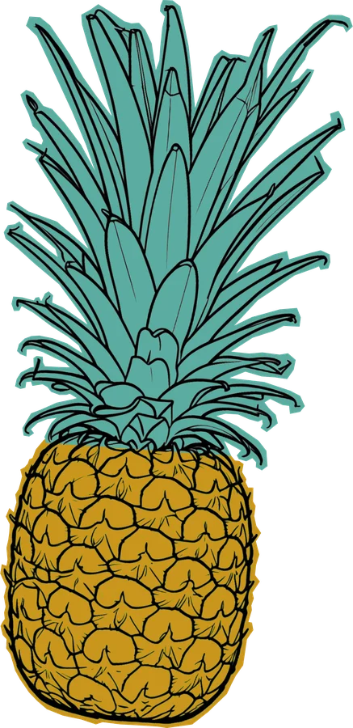
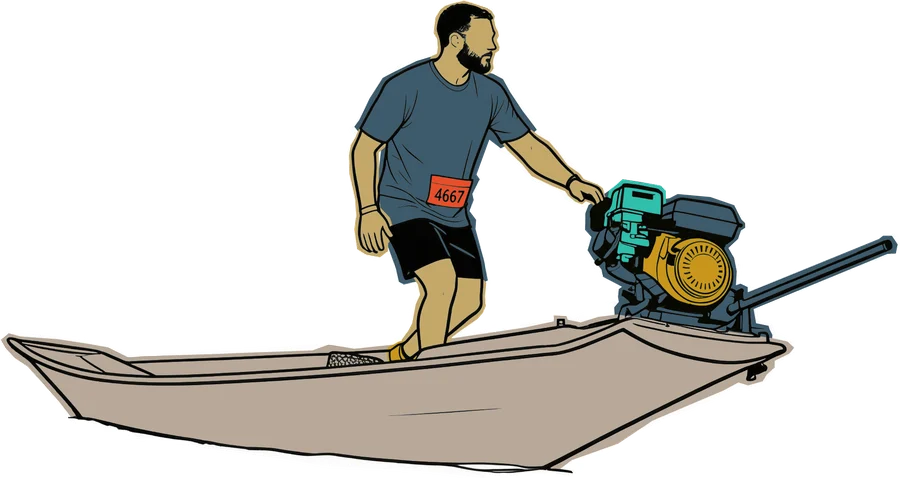
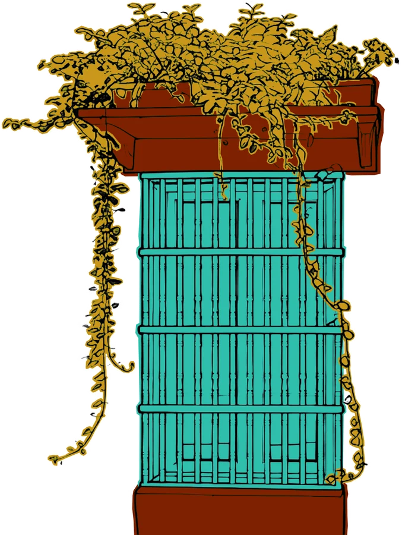
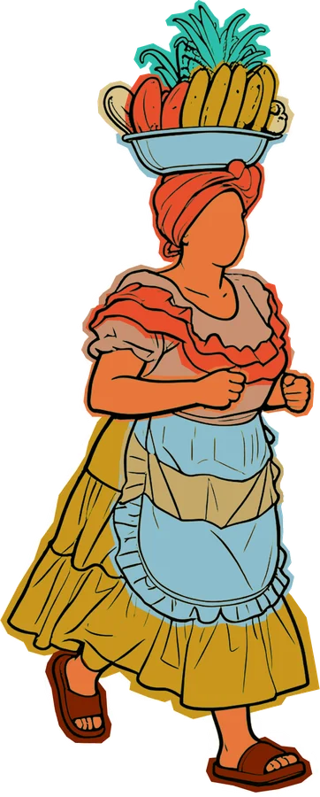
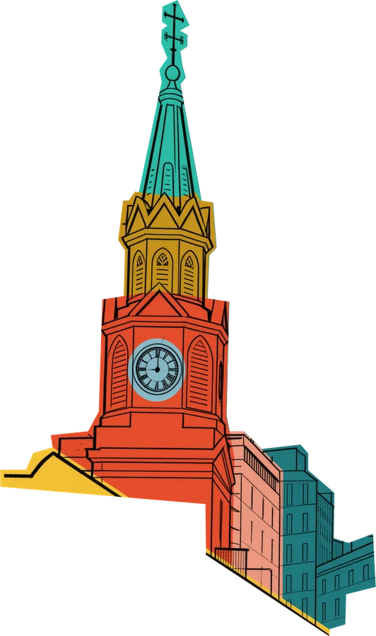
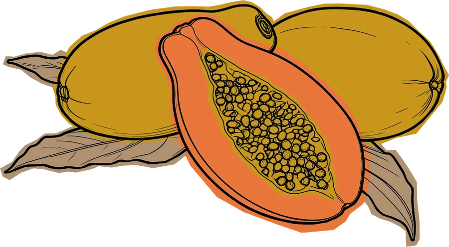
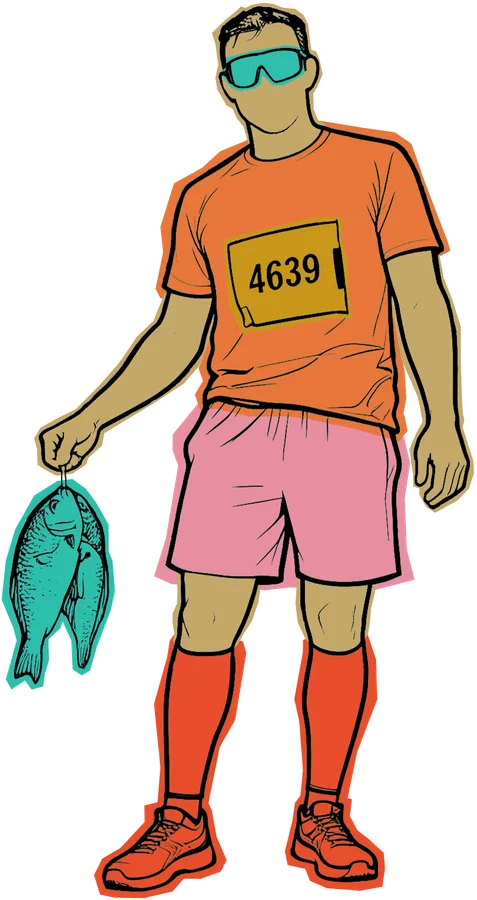
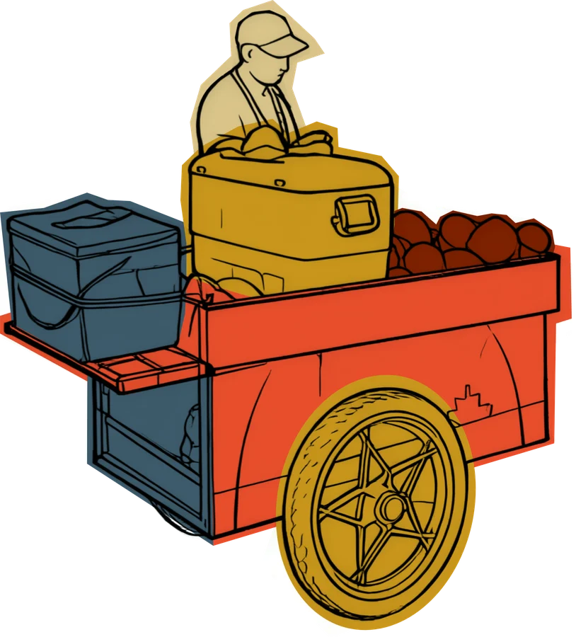
Textura gráfica
Opacidad fija del 25 % sobre fondos claros y del 80 % en modo multiplicar sobre fondos intensos.
Key Visual 2027
Manual completo de 20 láminas: logotipo, paleta, tipografía, reglas de uso, elementos de apoyo y aplicaciones.
03
Recorrido oficial 2027
Ambas distancias salen de la Sociedad Portuaria y llegan al Centro de Convenciones Cartagena de Indias. Los íconos del recorrido son los mismos que dibuja la campaña.
El recorrido arranca dentro del Puerto de Cartagena y recorre cerca de 1,2 km al interior del puerto.
Hasta la carrera 25 y la calle 24, para continuar bordeando la bahía.
La oreja bajo el puente empalma con la carrera 17.
Paso frente al castillo hasta la rotonda, con giro hacia la India Catalina.
Desde allí, la avenida Luis Carlos López lleva hasta Calle Larga.
El recorrido sigue por el camellón rumbo a la Torre del Reloj.
Entrada al Centro Histórico.
Cerca de 1,5 km entre calles coloniales y salida por la calle 31.
Rumbo a Bocagrande, con la brisa del mar de frente.
Hasta la carrera 4, bordeando la bahía hasta el Club Naval.
Calle 5 hasta la carrera 7 y regreso por el mismo recorrido hasta la avenida Blas de Lezo.
Giro a la derecha y recta hasta la meta, a la altura del Concejo.
Llegada e ingreso al parqueadero 2 del Centro de Convenciones Cartagena de Indias.
La organización lleva a los corredores hasta la salida desde 9 puntos de acopio de la ciudad, entre las 2:45 y las 3:45 a. m. Solo se ingresa al puerto en el transporte oficial, con manilla y número.
Sábado 20 de febrero, 7:00 a. m. Recorridos de 1K y 2K para iniciar a los niños en el deporte. Sin premiación: todos reciben su medalla de campeones.
04
Campaña en acción
Aplicaciones del Key Visual con personajes, frases y el sello de los diez años.
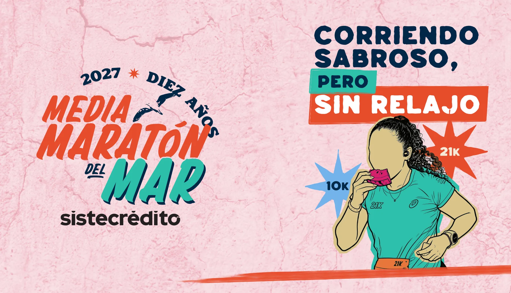
05
Producción de evento
46 piezas de producción para la feria, la acreditación y el día de carrera: el mismo lenguaje de la campaña llevado a números, backings, counters, escarapelas, kilometraje y podio.
El número de corredor por distancia: 21K con corral y 10K, con los íconos de la campaña.
Señalización del Salón Barahona para la entrega de kits y números, con backings por distancia y por punto de transporte.
Escarapelas por tipo de acceso, manillas de transporte por punto de acopio y camiseta oversize para el staff.
Del arco de bienvenida a la cinta de meta: kilometraje, podio, tótem de medalla, marcos para fotos y certificado.
Invitación y backing para la rueda de prensa de lanzamiento.
06
Créditos
Dirección, acompañamiento, procesos y contribuciones creativas.
Ejecución y apoyo creativo en partes iguales: diseño, adaptaciones, aplicaciones y producción de piezas.
Proyecto desarrollado en contexto colaborativo.
Desde 2018 · Cartagena de Indias
10 añosDiez ediciones corriendo desde el puerto hasta las murallas de Cartagena.
Media Maratón del Mar 2027
Diez años de carrera en Cartagena · domingo 21 de febrero de 2027.
1:05:46
1:15:37
Fuentes: mediamaratondelmar.com (información general, reglamento y preguntas frecuentes 2027) y El Universal (resultados 2026).
Media Maratón del Mar 2027